Three Control Problems, One Simulated Plant
A latch, a sorting line and a tank. I wrote three IEC 61131-3 programs in CODESYS and commissioned each one against a 3D plant in Factory I/O over an OPC DA/UA link. The PLC never talks to the simulator directly, which is exactly how it works when a real controller is brought up against an HMI or SCADA layer. The main project is a process tank where the whole job is analog signal conditioning: turning raw transmitter counts into engineering units, and proving those conversions with numbers from the running plant before any control law goes on top.
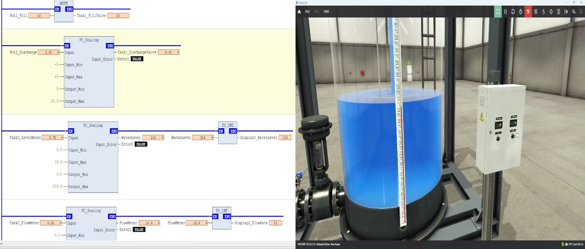
The PLC never talks to the plant directly.
All three projects use the same toolchain. The program runs in the CODESYS soft-PLC
runtime, Factory I/O holds the 3D plant and exposes every sensor and
actuator as an OPC tag, and an OPC DA/UA server sits in between. CODESYS
publishes the variables in PLC_PRG through a symbol configuration object,
the OPC server browses it, and Factory I/O ties each simulated device to one of those items.
So the PLC only ever sees the plant as a list of tags, just as it would over a real fieldbus.
That link matters more than it looks. The OPC round trip adds delay on top of the PLC scan, and you can see it in the recordings as a small lag between a tag changing in the watch table and the matching motion in the 3D scene. I wrote the logic to live with that. State is kept in latches and counters instead of being worked out from whatever the sensors happen to read at that instant, and that's the difference between a program that works at one conveyor speed and one that works at any speed.
It's also the reason to simulate the plant in the first place. Getting ladder logic to compile is easy. Getting it to behave with real actuator travel times, sensor debounce and the weight of moving parts is not. A race between a diverter command and a photo-eye, the kind of bug that only shows up at speed, turns up while you're still developing instead of on commissioning day.
| Component | Version |
|---|---|
| CODESYS Development System | V3.5 SP22 Patch 2+ |
| CODESYS runtime | 3.5.22.20 |
| Symbol configuration object | 4.7.0.0 (library 4.6.0.0) |
| Factory I/O | v2.5.10 Ultimate Edition |
| OPC interface | OPC DA / OPC UA client |
Four networks and not a single bit of Boolean logic.
Two potentiometers let the operator set the fill and discharge valves, and the level and flow
transmitters are scaled into engineering units and shown on two panel displays. Every signal
is analog, so all the work is in the scaling: one MOVE, three
FC_Scaling blocks and two TO_INT conversions spread across four FBD
networks.
Tank1_DischargeValve reach 10 when the centre-detent pot hits its full clockwise stop at Pot2_Discharge = 5.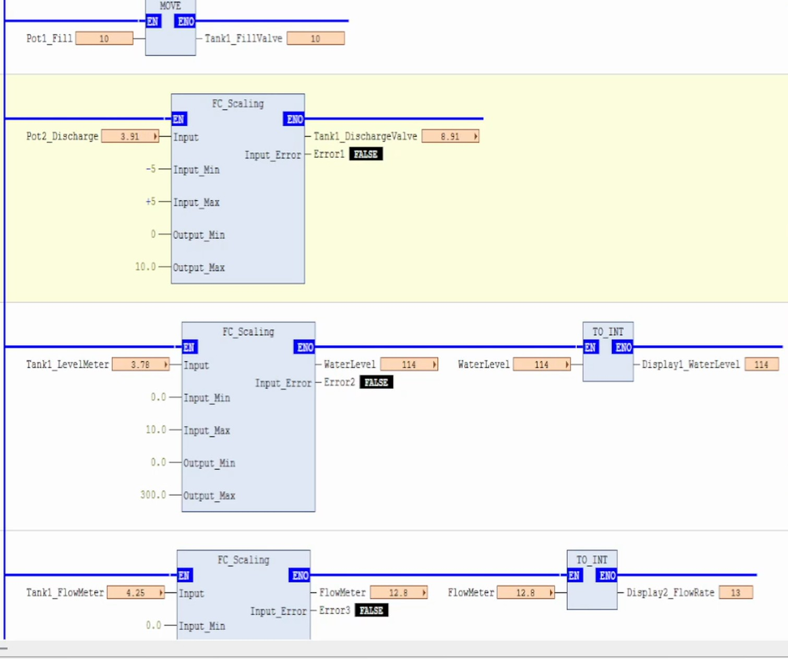
Error1 to Error3 all read FALSE.| # | Function | Input range | Output range | Destination |
|---|---|---|---|---|
| 1 | MOVE | Pot1_Fill | pass-through | Tank1_FillValve |
| 2 | FC_Scaling | −5 to +5 | 0 to 10 | Tank1_DischargeValve |
| 3 | FC_Scaling, then TO_INT | 0 to 10 | 0 to 300 | Display1_WaterLevel |
| 4 | FC_Scaling, then TO_INT | 0 to 10 | 0 to 30 | Display2_FlowRate |
Why network 2 is the interesting one
The discharge potentiometer has a centre detent, so it reads −5 at one end and
+5 at the other. The valve, like every valve, only goes one way, from 0 to 10.
FC_Scaling maps the two-sided range onto the one-sided one:
Networks 3 and 4 go the other way. They take the raw 0 to 10 transmitter signal and turn it
into the units printed on the tank's gauge board, and then TO_INT converts that to
the display's integer type. That conversion rounds instead of chopping off the
decimals, and the sampled values show it clearly: a flow of 18.7 displays as 19, and a level of
0.0997 displays as 0.
Verifying the transfer functions against the plant
Scaling parameters are easy to get wrong and impossible to catch just by looking, so I checked both transfer functions with numbers, sampling live values from the online view at three points during the run:
| Tank1_LevelMeter | Expected (×30) | Observed | Display1_WaterLevel |
|---|---|---|---|
| 3.86 | 115.8 | 116 | 116 |
| 3.58 | 107.4 | 107 | 107 |
| 0.00337 | 0.101 | 0.0997 | 0 |
| Tank1_FlowMeter | Expected (×3) | Observed | Display2_FlowRate |
|---|---|---|---|
| 2.62 | 7.86 | 7.87 | 8 |
| 5.98 | 17.94 | 17.9 | 18 |
| 6.22 | 18.66 | 18.7 | 19 |
Both transfer functions match within display rounding across the whole range. The highlighted rows are where you can see the INT conversion at work.
Each FC_Scaling block also drives an Input_Error output.
Error1, Error2 and Error3 stay FALSE for the whole
recording, which confirms no transmitter ever left its declared range. I count that range check
as part of the evidence, not an afterthought.
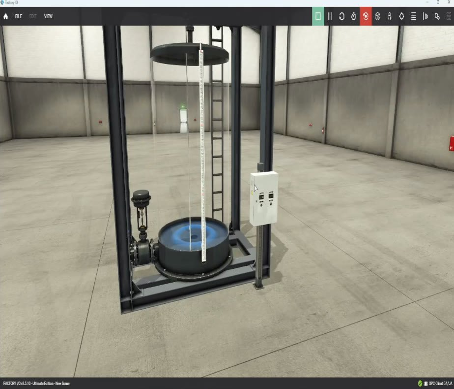
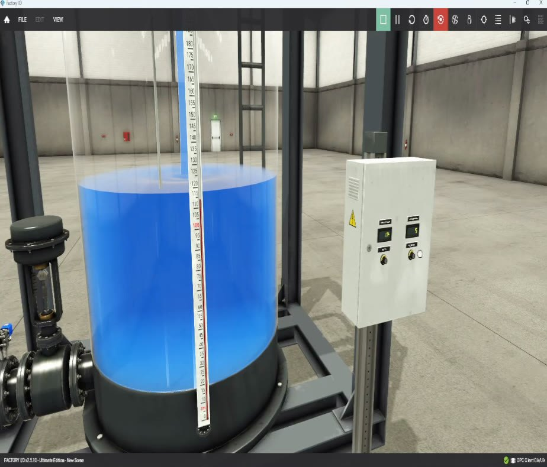
This project is open-loop. There is no PID block, and I'm not claiming one.
The operator closes the loop by watching the displays and turning the potentiometers. I see
that as the right place to start, not a shortcut. A regulator tuned on a badly scaled
transmitter will look perfectly stable and still hold the wrong setpoint. The natural next
step is to drive Tank1_FillValve from the error between a setpoint and
WaterLevel, leaving the discharge valve as a manual disturbance. The scaling
networks would carry over untouched, which is exactly why signal conditioning and control
belong in separate pieces.
The smallest piece of memory in ladder logic.
The job is to run a belt conveyor from a two-button station. A quick press of Start has to latch the drive on, letting go must not stop the belt, and Stop has to break the circuit at any moment. It takes six BOOLs and two networks.
FIO_B reads 0 while FIO_C stays 1, so the latch is holding the drive, not the button.
Three details carry the whole thing. The C contact in parallel with B
feeds the coil's own state back into the rung, so it's the latch that holds the drive, not the
button. A sits in series before that parallel block, so holding Start can
never override Stop. And A is read through a normally closed contact, the way
real panels are wired, so a broken wire to the Stop button cuts power to the rung instead of
quietly disabling the stop.
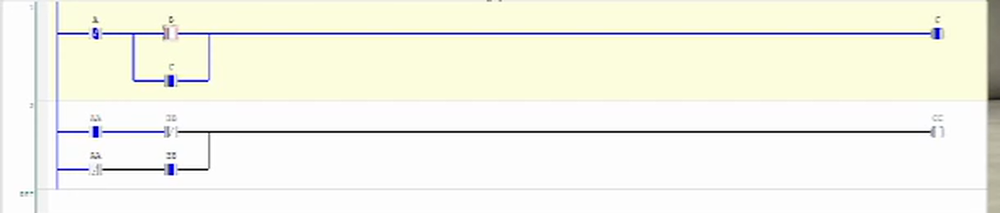
C; network 2 is correctly blocked because both XOR inputs are TRUE.
The tag trace proves it. B reads 0 in every sampled frame, because the Start press
is only momentary, yet C stays at 1 until A goes high, and then the
rung breaks. Meanwhile CC stays 0 the whole time, because AA and
BB are both 1, which is the right XOR answer.
| Time in run | A | B | C | AA | BB | CC | State |
|---|---|---|---|---|---|---|---|
| start | 0 | 0 | 0 | 1 | 1 | 0 | idle, belt stopped |
| after Start | 0 | 0 | 1 | 1 | 1 | 0 | latched on, Start already released |
| end | 1 | 0 | 1 then 0 | 1 | 1 | 0 | Stop asserted, rung breaks |
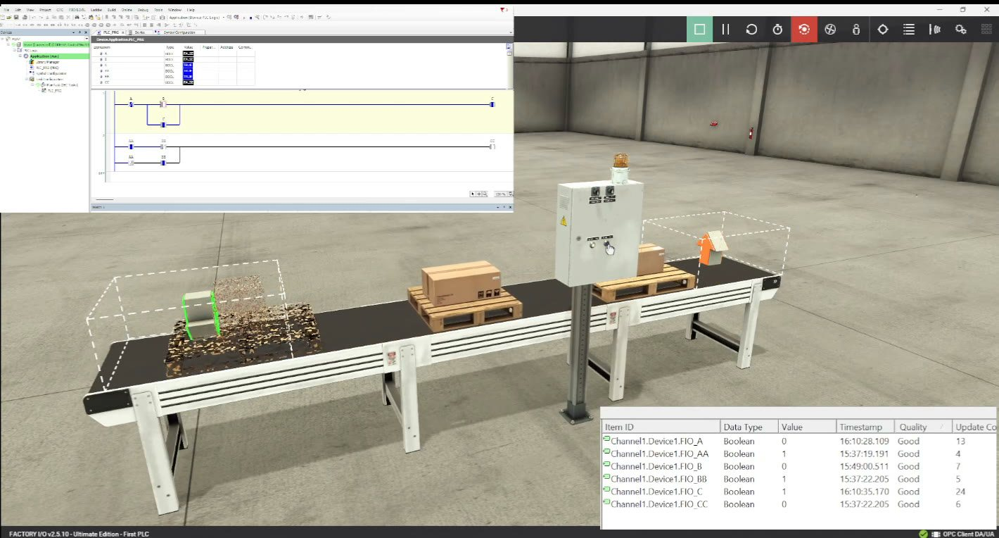
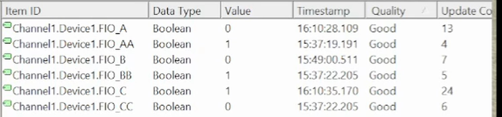
A and C keep climbing, which shows the link is live and not cached.By the time the box reaches the junction, the sensors have forgotten it.
A pallet line loads a box, measures how tall it is, sends it down the left or right lane, and
counts the boxes on a panel display. It runs on nineteen tags, eighteen BOOLs plus a
WORD for the display, driving five RS latches and two
CTUD counters.
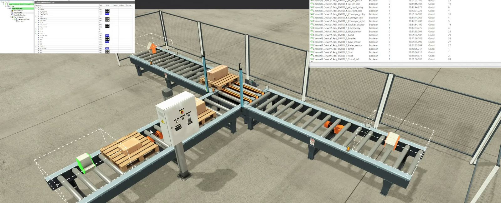
The height sensors sit before the junction. By the time a pallet reaches the
diverter the beams have already cleared, so reading the sensors at the junction would never
work. RS_2 latches the result at the moment the box is measured and holds on to it
until the transfer is done. It's that latch, not the sensor, that makes the routing work at any
conveyor speed.
RS is the reset-dominant bistable, meaning that if Set and Reset
both fire in the same scan, Reset wins. That's the safe choice for a sorting station. If a stop
or emergency happens at the same moment as a set, the state clears instead of locking a
diverter on. I count boxes at the lane exit sensor rather than the entry, so a
pallet that gets stuck halfway through a transfer never gets added to the total.
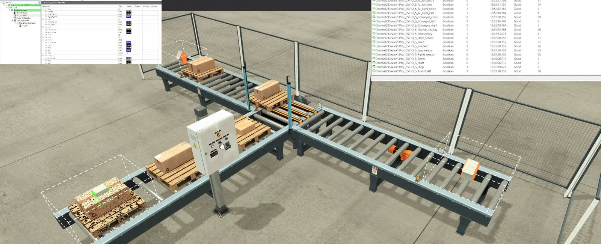
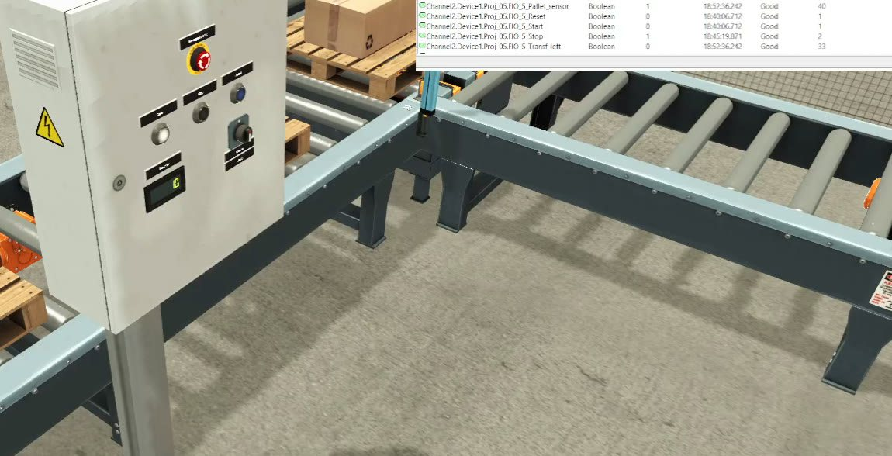
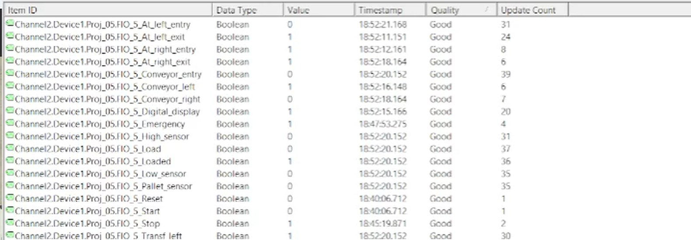
I've described Project 05's logic from its online instance tree and how it behaved. I haven't
reproduced the full ladder here, because it wasn't on screen in the recording. For the real
source, open Proj+05.project in CODESYS. The .project files use
CODESYS's own container format, so you can't read them as text or diff them in version
control.
What the three taught me together.
| Project 02 | Project 05 | Project 07 | |
|---|---|---|---|
| Language | Ladder (LD) | Ladder (LD) | FBD |
| Problem class | Discrete with a latch | Sequential handling | Analog conditioning |
| Signals | 6 BOOL | 18 BOOL and 1 WORD | 6 REAL and 2 INT |
| Key constructs | Seal-in, NC stop, XOR | RS ×5, CTUD ×2 | MOVE, FC_Scaling ×3, TO_INT ×2 |
| Memory strategy | Coil self-seal | Reset-dominant bistables | Stateless per-scan transform |
| Validated by | Tag trace through the latch | Sort cycles and counter tally | Checking the transfer functions with numbers |
Latching is the building block under everything. The seal-in in Project 02 and the
RS blocks in Project 05 are the same idea written two ways, and picking one is
mostly about readability. The exception is reset dominance, which RS spells out
and a seal contact leaves hidden in the order of the rungs. Sequential logic needs its memory
right where the measurement happens, because a decision made metres upstream can't be worked out
again at the diverter. Scaling deserves as much attention as control. Most of the work in an
analog loop happens before any control law runs, and it can and should be checked with numbers
from the live plant. And simulation is what lets me say any of this is correct. Everything on
this page is backed by numbers read off the running system, not by a program that simply
compiles.